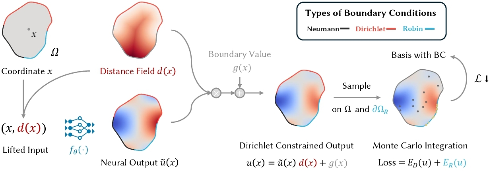
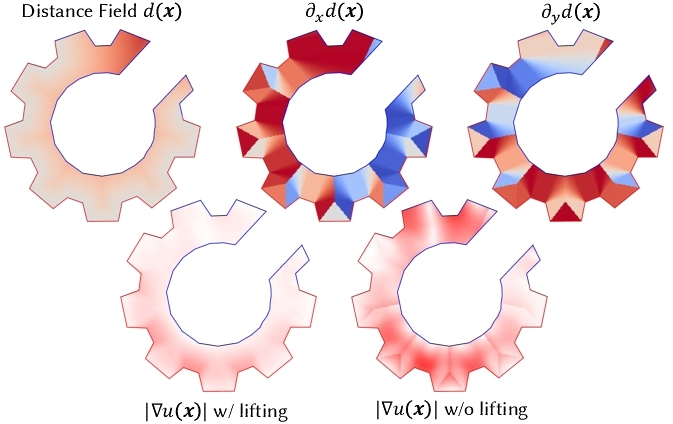
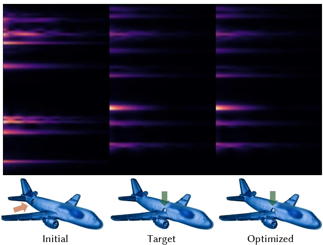
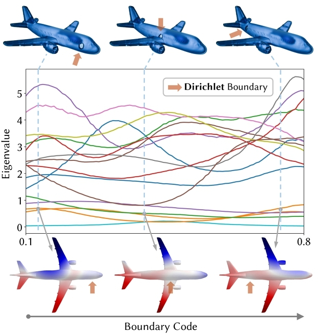
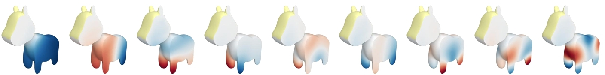
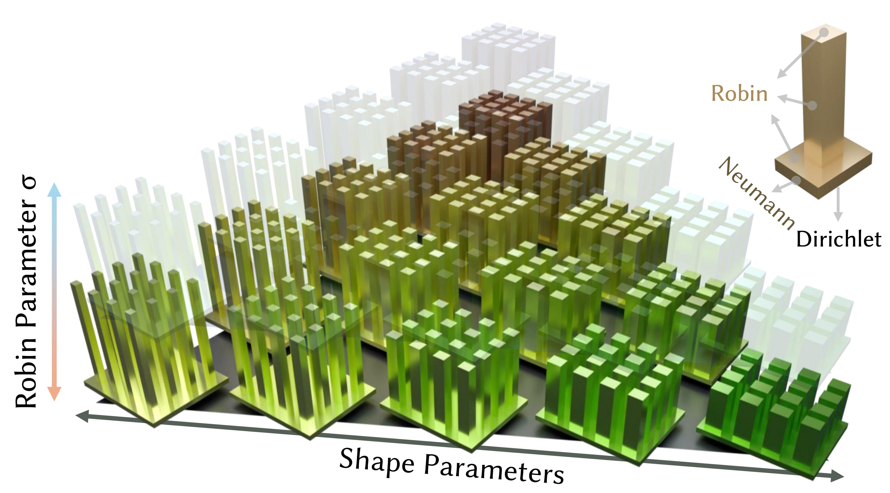

Abstract
Eigenanalysis of partial differential operators is central to reduced-order physical simulation, but neural shape-space eigenanalysis has largely been limited to natural Neumann boundary conditions. This prevents direct control over supports, openings, heat-exchange boundaries, and other boundary effects that change the underlying operator.
We extend neural eigenanalysis for Laplace-type operators to Dirichlet, Robin, and mixed boundary conditions. Boundary placement and Robin coefficients are treated as model inputs, giving a joint shape-boundary space where eigenfunctions and spectra vary continuously with both geometry and boundary configuration.
The resulting boundary-aware bases support resonance tuning, reduced-order elastic simulation with changing supports, and transient heat analysis under controllable boundary exchange.
Highlights
Mixed boundary conditions
Neumann, Dirichlet, and Robin boundaries share one variational neural eigenanalysis framework.
Bases respect constraints
The reduced space is constructed to satisfy Dirichlet constraints instead of fighting them with penalties.
Designable boundary space
Boundary parameters act as inputs that can be searched, optimized, and reused across physical examples.
Method
Boundary-Aware Neural Eigenanalysis


Boundary-Space Control
Cavity Resonance Matching


Dirichlet Bases
Constraint-Aware Reduced Spaces

Elastic Boundary Space
Dirichlet Boundary-Space Elastic Simulation
Thermal Shape-Boundary Space
Heatsink Unit Basis

BibTeX
@inproceedings{liao2026boundaryaware,
author = {Liao, Li and Shen, Pengfei and Peng, Yifan},
title = {Boundary-aware Neural Model Reduction for PDEs},
booktitle = {SIGGRAPH 2026 Technical Papers},
year = {2026},
pages = {12},
location = {Los Angeles, CA, USA},
publisher = {ACM},
doi = {10.1145/3799902.3811153}
}